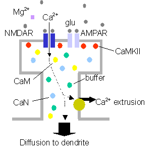
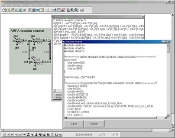

Kazuhisa Ichikawa
Corporate Research Center, Fuji Xerox Co., Ltd.A neuron receives incoming signals, changes its states and generates output signals through biochemical and biophysical interactions within it. The final goal of our study is to construct models of complicated biochemical and biophysical interactions within a neuron in a computer and thereby leading to the understanding of a neuron. At present we focused our effort on the construction of models for synaptic plasticity. The model is composed of reactions including activation of calcineurin (CaN), and Ca2+/calmodulin-dependent protein kinase II (CaMKII) as shown in Fig.1. From simulations we found that at low or high stimulation frequencies the concentration of activated CaN ([CaN*]) was higher or lower than that of activated CaMKII ([CaMKII*]) suggesting the induction of long-term potentiation (LTD) or depression (LTP), respectively. These results were consistent with experimental observations. Interestingly, however, at very high stimulation frequencies [CaMKII*] was lower than [CaN*] again suggesting the induction of LTD, which was not reported before. Thus the model predicted that at very high stimulation frequencies, the synaptic efficacy is depressed instead of potentiated. This prediction has been confirmed by experiments.
|
 Fig.1 A model for LTP and LTD |
 Fig.2 A-Cell |
For the purpose of constructing complicated biochemical and biophysical interactions, we developed a tool called A-Cell. One of powerful features of A-Cell is a capability of constructing models graphically as shown in Fig.2. A-Cell is free software. Using A-Cell we will reach the goal of constructing comprehensive models of a neuron in a computer.